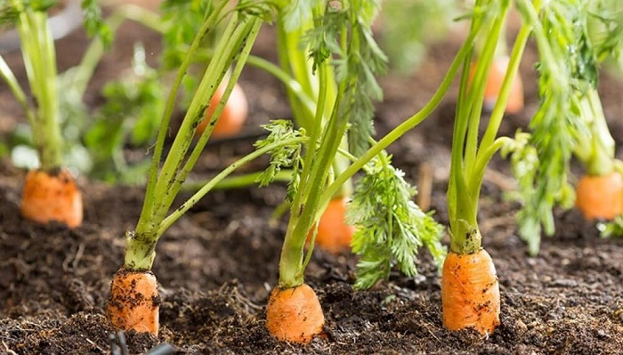
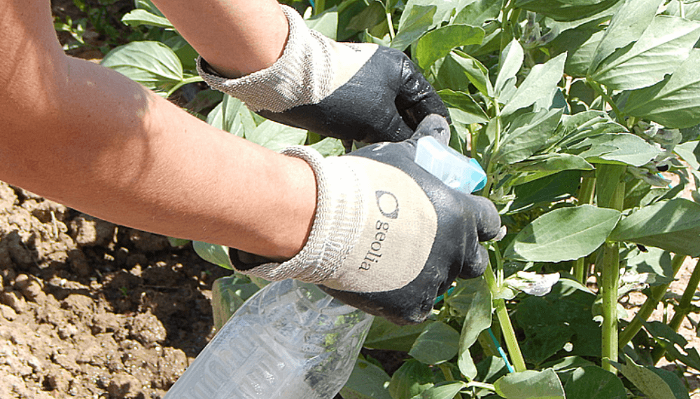
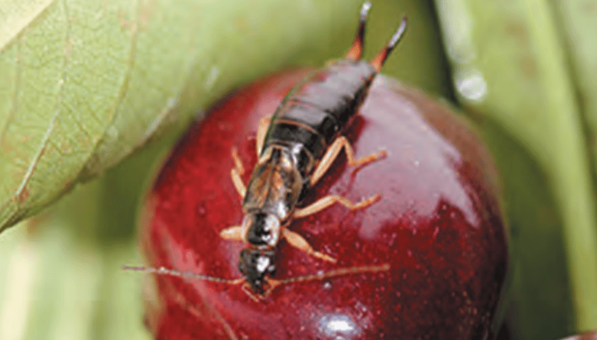

Zanahoria, una hortaliza ideal para sembrar durante mayo en la huerta del hogar.

Para una buena implantación del cultivo, se recomienda pre-embeber las semillas de zanahoria en agua durante aproximadamente una hora.
Con respecto a la preparación del terreno, es importante remover la tierra para que quede lo suficientemente suelta, donde luego se esparcirán las semillas manualmente. Una vez colocadas sobre el terreno, se debe cubrir con turba para mantener la humedad necesaria para que germinen, y aportar nutrientes necesarios.
Se aconseja mantener el cultivo libre de malezas los primeros 40 a 45 días después de siembra. Esto garantiza cerca del 80% de la producción.
Los métodos más comunes para el control de malezas en zanahoria son:
Control manual: a través de herramientas como machetes y azadón a los 20-30 días después de emergencia y un segundo control 20-25 días después del primero.
Control cultural: se recomienda la rotación de cultivos para romper el ciclo de las malezas.
Control químico: como última opción, se recomienda usar herbicidas selectivos, en especial productos con banda verde ya que son menos perjudiciales al ambiente y la salud humana.
En cuanto a la fertilización del cultivo, existen dos momentos importantes: A la siembra y entre 40 y 45 días después de nacido el cultivo. En esta práctica, se aconseja siempre el empleo de abonos orgánicos.
Cabe destacar la importancia de realizar prácticas agroecológicas, la elección de los sustratos o el mantenimiento de la cobertura del suelo, en caso de que sea la superficie elegida para hacer el cultivo.
Jabón potásico: cómo preparar el repelente natural para las plagas de la huerta en forma casera.

Cuando el aceite vegetal entra en contacto con el hidróxido de potasio se produce una reacción química, de la que surge una glicerina soluble en agua. Esa mezcla tiene un PH alcalino y no posee ningún efecto tóxico para las personas ni las mascotas como tampoco para los cultivos del hogar.
Al mismo tiempo, este insumo limpia la planta. Comúnmente, los pulgones exudan una melaza azucarada que resulta sumamente atrayente para otras plagas como, por ejemplo, las hormigas. Mediante la acción de limpieza, estas defoliadoras no acuden a la planta debido a la acción del jabón.
A su vez, es un buen repelente para los hongos fitopatógenos que muchas veces atacan a nuestros cultivos de la huerta debido a que tiene efecto fungicida.
Como es biodegradable, una vez que se desprende del cultivo y cae a la tierra, se convierte en carbonato de potasio, la propia tierra lo asimilará y convirtiéndose en un componente más, enriqueciendo la tierra.
Si bien puede aplicarse en cualquier momento del día, lo recomendable es al amanecer o al atardecer, nunca durante pleno sol, ya que podrían quemarse las hojas. Del mismo modo, debe evitarse los días lluviosos o ventosos para no perder su efecto insecticida causa de la deriva o el lavado por agua de lluvia.
Es importante aplicar tanto en el haz como en el envés de las hojas, para asegurarse el contacto del producto con el blanco.
En cuando a las cantidades para preparar el jabón, se estima una dosis máxima de 25 gramos de jabón por cada litro de agua, aunque siempre dependerá de la situación en particular.
Cómo es el manejo y el control de la tijereta, una plaga que afecta a la huerta del hogar.

La tijereta europea (Forficula auricularia L.) es un insecto que habita en climas templados y tiene hábito gregario. Normalmente, se los visualiza durante la noche, y se ocultan durante el día debajo de rocas, troncos, material en descomposición y entre la corteza de los árboles.
A la hora de hacer sus nidos, estos insectos eligen los ambientes húmedos y oscuros, y sobre todo en restos de materia orgánica en descomposición (hojarascas y pastizales).
Por un lado, se los suele considerar como una especie benéfica, sin embargo, en ocasiones resultan una plaga para varios cultivos agrícolas y la huerta del hogar no es la excepción.
En relación a su alimentación, son una especie de hábito omnívoro. Su dieta se extiende desde plántulas, brotes, follajes, flores y frutos hasta incluso animales vivos, muertos y productos almacenados.
En esta línea, su alimento variará según la abundancia relativa de las distintas fuentes disponibles en el lugar y a su vez las condiciones ecosistémicas y climáticas donde se desarrolla este insecto. Ante una eventual escasez, estos insectos podrían ocasionar daños directos a la huerta. En tanto, se registraron numerosos daños causados por tijeretas en hortalizas, tales como porotos, coliflor, repollo, apio, lechuga, arveja, tomate.
En primer lugar, como medida preventiva de manejo, se recomienda realizar una limpieza exhaustiva de los alrededores de la huerta, especialmente donde existan acumulaciones de materia orgánica en descomposición y pastizales sin un manejo agronómico riguroso.
A su vez, existen distintas herramientas de control que proporcionan a continuación los expertos vinculadas a las producciones agroecológicas, especialmente a pequeña escala.